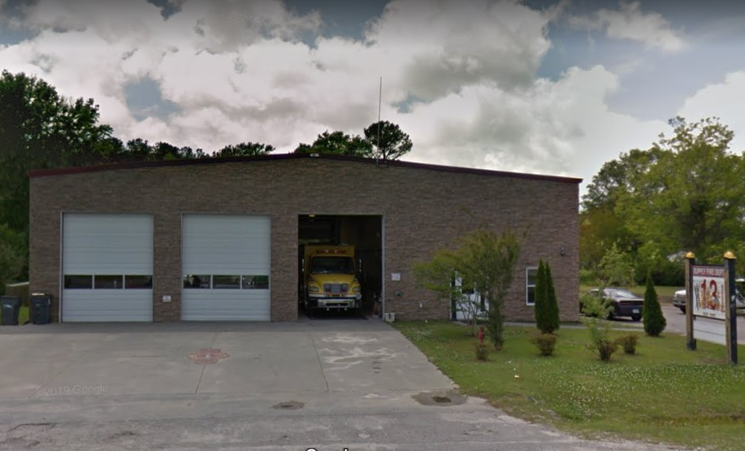
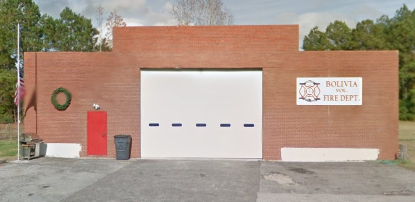
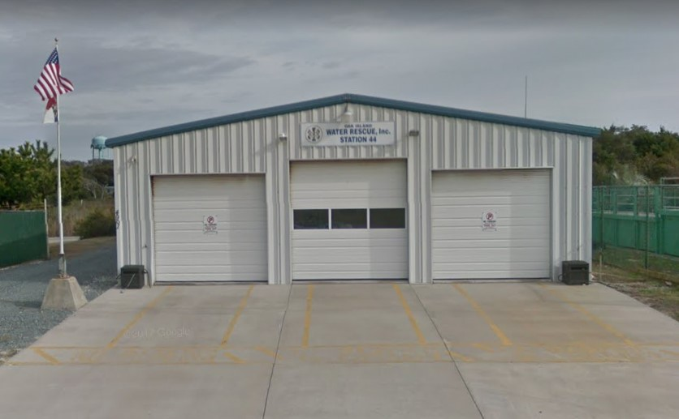

{kind=link}
Fire, Rescue & EMS Station Locations in Brunswick County, North Carolina
Map Prepared By: Sean Stewart, University of Kentucky Geography
This map shows the distribution of all Fire, Rescue & EMS Department Station locations in Brunswick County, North Carolina . This data was developed by researching the Brunswick County Website for list of Fire Departments (Brunswick County Government) and this was crossed referrenced with the North Carolina Fire Station Mapping Project (FDMaps.com). Locations were also confirmed via searching Google Maps.
The majority of the county is serviced by Volunteer Fire Departments. All departments within the county tend to coordinate training together, as well as fight fires, and perform rescue services jointly depending upon the location of the emergency.
CRS/Projection: NAD 1983 State Plane North Carolina FIPS 3200 Feet (ESRI: 102719)
Scale: 1:250,000
Date: June 16, 2020
Tools used in this project
- Software Used: QGIS v3.12
- Data Sources: Basemap © OpenStreetMap contributors, locations derived from Google Maps
Project assets
Supply Volunteer Fire Department Station 13
Bolivia Volunteer Fire Department
Oak Island Water Rescue Station 44